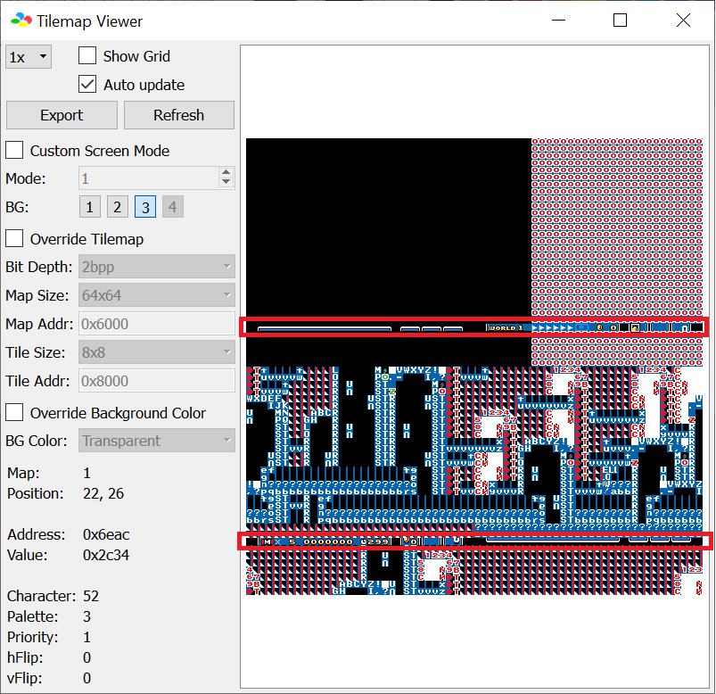
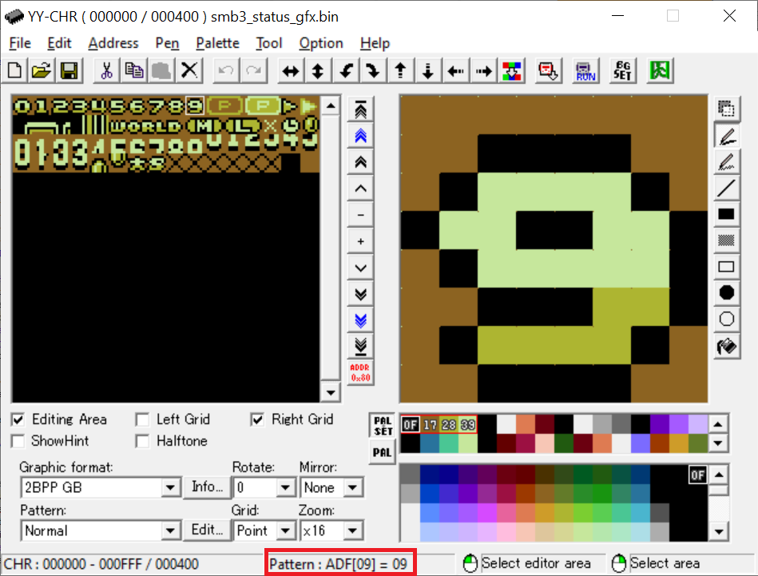
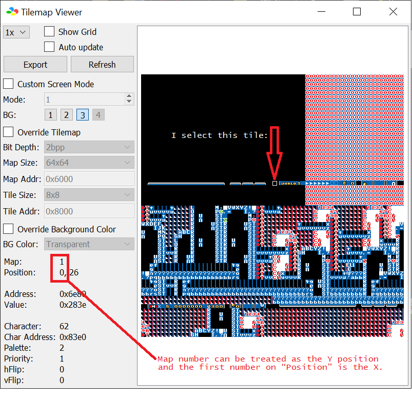

Unlike most other layer 3 status bar patches, tile conversion to coordinates is completely different. Instead of having all the tiles all together in the tilemap, each horizontal lines of 8x8 tiles are split into each
of the 4 “screens” of the tilemap: 
Thankfully, Bsnes+ v4 (or higher) tile coordinate system is updated to show its position
relative to each one of the 4 screens instead of the top-left corner of all 4 screens. The map number can be used as the “row number/Y position”.
How tile data are stored
Each 8x8 tile contains 2 bytes of information, the “tile number” (TTTTTTTT) and the “tile properties”:
Tile Number: Refers to what tile to use that is stored in the tile S-PPU. This can be seen by using YYCHR on smb3_status_gfx.bin and looking at the status bar at the bottom labeled
“Pattern”:

Obviously this ranges from $00 to $FF since all 8 bits are used.
Tile Properties: Attributes of the tile. Stored in binary as follows:
YXPCCCTT: Y-flip (%0 = no, %1 = yes)
YXPCCCTT: X-flip (%0 = no, %1 = yes)
YXPCCCTT: Priority (%0 = behind things, %1 = in front of things)
YXPCCCTT: Page number (akin to LM when going to Overworld Editor → File → Layer 3 Level → Load layer 3 of Level →
Open "8x8 Overworld tile selector" Window and pressing up/down on the arrow keys):
%00: Page 0 (you most likely only use this page)
%01: Page 1
%10: Page 2
%11: Page 3
Unlike the Super Status Bar or Overworld Border plus patch, the tile number and properties are
stored in RAM in separate tables instead of each tile having the 2 bytes placed together (this patch's format: tile number table: [TTTTTTTT (tile 0), TTTTTTTT (tile 1), ...],
Tile properties table: [YXPCCCTT (tile 0), YXPCCCTT (tile 1), ...]).
Locating tiles
To obtain the coordinate of the selected tile, run Bsnes+, and on any level, go to Tools → Debugger → S-PPU → Tilemap Viewer and
select “3” on the BG layer, and enable “Auto Update”. Because the status bar writing is timing-based when drawing the screen, there is
a chance that the tilemap will only display layer 3 non-status bar (layer 3 backgrounds, for example) as the debugger only displayed it during non-status bar write,
therefore a breakpoint and “stepping” around $0082A4 will help. After that, select any status bar tile, you should get the map number (Y position for this table)
and the first number in “Position” (X position for this table): 
Then on this HTML file, CTRL+F and enter (<X_position>,<MapNumber>) (including the quotes) with no leading zeroes.
The following is two address, enter the RAM address presented on the Asar console window (the starting address, of all tiles, not ending) if you have edited the RAM addresses or use SA-1.
I made this JS table-er to make it easy to locate what RAM of a given tile without using a calculator.
To edit the default tile and properties, they are stored in smb3_status_map.bin. NOTE: default tile data are stored the same format as the SSB and OWB+ patch (those patches format: [TTTTTTTT (tile 0),
YXPCCCTT (tile 0), TTTTTTTT (tile 1), YXPCCCTT (tile 1),...], unlike how the RAM format this patch uses. You'll need a hex editor to see and modify that. Most hex editors display the offset (an
“address” from the first byte), make use of that.